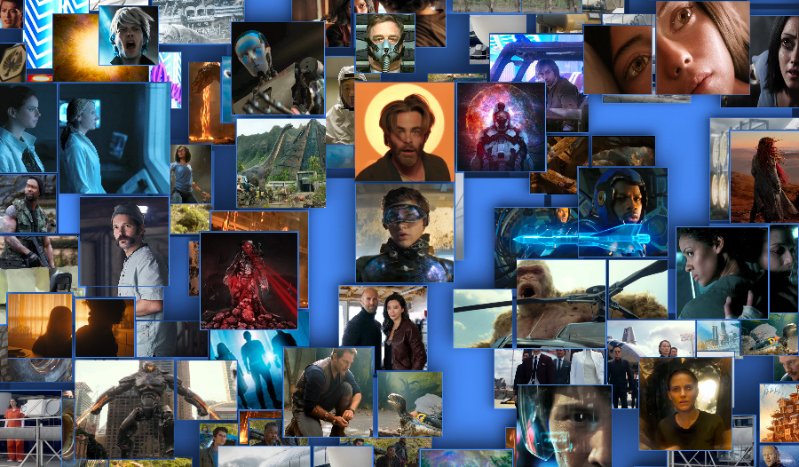

It seems that the science fiction genre has never had it so good. Herein lie some of the most anticipated sci-fi films of 2018 lined up for your perusal in the order of their release. Inevitably, some of this year’s movies will yet turn out to be just overblown high-flying balloons that quickly pop (or rather fizzle out) and fade out to obscurity, but otherwise everything indicates that 2018 will be a great year for science fiction cinema.
“The apocalypse proves a blessing in disguise for one lucky recluse until a second survivor arrives with the threat of companionship” – reads the slogan of the low budget sci-fi film directed by Reed Morano and written by Mike Makowsky. The movie, which tells the story of two people who find themselves in each other’s company after an apocalypse, stars Game of Thrones’ Peter Dinklage as Del and Elle Fanning (who appeared in her breakout role in J. J. Abrams’ superb coming-of-age sci-fi drama Super 8) in the role of Grace. The film, which had its world premiere at the Sundance Film Festival, also stars Paul Giamatti and Charlotte Gainsbourg.
This third and final instalment in the 3-film dystopian science fiction series Maze Runner is almost 1 year behind the schedule as 20th Century Fox rescheduled the film for 2018 release, allowing time for Dylan O'Brien to recover from injuries he sustained during filming. The feature, based on the young adult sci-fi novel written by James Dashner and directed by Wes Ball from T.S. Nowlin’s screenplay, charts Thomas (Dylan O'Brien), Newt (Thomas Brodie-Sangster) and Frypan’s (Dexter Darden) journey to the WCKD’s headquarters in the ‘Last City’ to rescue their friend Minho (Ki Hong Lee), who is being used here as a guinea pig in the search for a Flare cure.
After a scientific experiment involving the Higgs boson particle goes wrong and causes Earth to disappear, a team of astronauts aboard a space station makes a terrifying discovery, that challenges all they know about the fabric of reality, as they desperately fight for their survival. This is the premise of American science fiction horror film directed by Julius Onah from the screenplay written by Oren Uziel & Doug Jung and produced by J. J. Abrams. The film, which is touted as the third instalment in the Cloverfield franchise, stars Daniel Brühl, Elizabeth Debicki, Gugu Mbatha-Raw, Chris O'Dowd, Zhang Ziyi, David Oyelowo, Aksel Hennie and John Ortiz.
Yet another sci-fi movie from Alex Garland, who has so far written scripts for five high-quality science fiction films: 28 Days Later, Sunshine, Never Let Me Go, Dredd and the outstanding Ex Machina (his directorial debut). The film, based on the book of the same name by Jeff VanderMeer, centres on a biologist (Natalie Portman), who is trying to come to terms with the disappearance of her husband in an environmental disaster. Looking for answers, she joins an expedition into the disaster zone, but what she finds there is not quite what she was expecting. Jennifer Jason Leigh, Gina Rodriguez, Tessa Thompson, Oscar Isaac and David Gyasi complete the cast.
This science fantasy flick by Disney is the second adaptation of the equally-named novel by American writer Madeleine L'Engle – the former being the 2003 TV film. The movie stars Storm Reid, Levi Miller and Deric McCabe as, respectively, Meg Murry, Calvin O'Keefe and Charles Wallace Murry, as they, with the help of the mysterious Mrs Whatsit (Reese Witherspoon) and her friends Mrs Who (Mindy Kaling) and Mrs Which (Oprah Winfrey), embark on a fantastic voyage to the planet Camazotz on a mission to rescue Meg’s father, astrophysicist Dr. Alex Murry (Chris Pine) from the malevolent IT.
The well-received Guillermo del Toro’s sci-fi Kaiju film gets a sequel, courtesy of Steven S. DeKnight in his big screen directorial debut. Charlie Day, Burn Gorman and Rinko Kikuchi are returning in their roles from the first film, joined by a new cast led by Star Wars’ John Boyega and completed by Scott Eastwood, Cailee Spaeny, Jing Tian and Adria Arjona. Ten years since the Battle of the Breach in the original film, vindicated by its victory, the Jaeger program has evolved into a global defence force. When the Kaiju threat returns, Jake Pentecost (Boyega), son of the late General Stacker Pentecost, is given a chance to fight back alongside fellow Jaeger pilots.
Just as the novel of American author Ernest Cline it is based upon, the film is set in a dystopian future of the year 2045, where it follows the main protagonist Wade Watts’s (Tye Sheridan) search for an Easter Egg in a virtual reality world of OASIS that denizens of this world wrecked by an energy crisis regularly frequent to escape their bleak lives. The stakes cannot be any higher – the winner is to be granted full ownership of the OASIS and it’s creator James Halliday’s (Mark Rylance) $500 billion fortune. But Wade and his friends aren’t the only ones after the ultimate prize – the corporate giant IOI hires a number of players to try and discover the treasure first.
Already the second monster science fiction film coming out this year, Rampage, based on 1986 arcade video game by Midway Games, centres on Davis Okoye, a man who develops an intimate bond with George, the unusually intelligent albino gorilla. When a rogue genetic experiment mutates the gentle ape into a raging beast of enormous size (alongside two other animals – wolf Ralph and crocodile Lizzie), Davis teams with Dr. Kate Caldwell, a geneticist, to secure an antidote, save America from destruction and his friend from certain death. Brad Peyton is directing, while Dwayne Johnson and Naomie Harris appear in the main roles of Okoye and Dr. Caldwell.
Another 'Star Wars Story' film distinct from the main line of Star Wars movies, Solo: A Star Wars Story is a space western set prior to the events of the original 1977 film, that explores the adventures of young Han Solo and Chewbacca, as they meet their old friend Lando Calrissian. Alden Ehrenreich will appear as Han Solo, a cynical smuggler, alongside Woody Harrelson who portrays Beckett, a criminal and Han’s mentor, Joonas Suotamo who plays Chewbacca, Han’s Wookiee first mate and sidekick and Donald Glover who stars as Lando Calrissian, a scoundrel on the rise in the galaxy’s underworld. Phil Lord, Chris Miller and Ron Howard are directing.
The bets are off for this one, as the film is helmed by American director Jeffrey Nachmanoff, who co-wrote the screenplay for the not-so-well-critically-received blockbuster The Day After Tomorrow. The film tells the story of a biologist who, in pursuit of bringing back to life members of his family who died in a car accident, is willing to not only violate all ethical principles, but won't even hesitate to break the law. The movie, which will be co-produced by Di Bonaventura Pictures, Riverstone Pictures and Fundamental Films, stars Keanu Reeves as Will Foster, Alice Eve as Mona Foster, his wife and Emjay Anthony as Matt Foster, Will and Mona’s son.
The fifth film in the re-launched Jurassic Park franchise, Fallen Kingdom is also a direct sequel to 2015’s Jurassic World. After the demise of the Jurassic World park on Isla Nublar, the dinosaurs roam freely on the island for four years until a volcanic eruption threatens their lives. The park manager Claire Dearing (Bryce Dallas Howard) recruits Owen Grady (Chris Pratt), a former park’s velociraptor trainer, to help her rescue the remaining dinosaurs. Owen also attempts to find Blue, the last of the four raptors he trained, but in the process he and Claire discover a conspiracy that could result in dinosaurs once more becoming the Earth’s dominant species.
Based on Yukito Kishiro's cult manga series that James Cameron instantly fell in love with after it was shown to him by fellow filmmaker Guillermo del Toro, Alita finally sees its big-screen premiere this year after being put on hold a few times because Cameron’s engagement with the four upcoming Avatar sequels. The film’s story revolves around Alita (portrayed by Rosa Salazar), a female cyborg whose intact torso is found by cybernetic expert Dyson Ido (Christoph Waltz) on a local dump in the futuristic dystopian city of Scrapyard. Keean Johnson appears as Hugo, Alita’s teacher of Motorball game and love interest, and Ed Skrein features as main antagonist Zapan.
Set to take place between Predator 2 (1990) and Predators (2010), this science fiction action horror film is directed by Shane Black, who appeared as a supporting actor in the original 1987 Predator, while Joel Silver, John Davis and Lawrence Gordon, who produced the first two Predator films, return as producers of this fourth straight entry in the series. The involvement of the veterans of the franchise indicates that the movie was born as a product of love and hopefully won’t disappoint. The plot involves Boyd Holbrook in the main role of Quinn McKenna, a former Marine and Special Forces Commando, who finds out about the Predators but no one believes him.
This sci-fi action horror film directed by Jon Turteltaub and based on the 1997 science fiction book Meg: A Novel of Deep Terror by Steve Alten tells the story of a former Naval Captain and expert rescue diver Jonas Taylor (Jason Statham) and oceanographer Celeste (Jessica McNamee) who are recruited for a deep-sea rescue mission to save Dr. Minway Zhang (Winston Chao) and Suyin Zhang (Li Bingbing), Chinese scientists trapped at the bottom of the sea and under attack from the 70-foot, thought-to-be-extinct, megalodon shark. The movie, shot primarily at locations in West Auckland, New Zealand, is produced by Warner Bros. Pictures.
Nearly a decade after invasion and occupation of Earth by an alien force, the lives of a Chicago neighbourhood on both sides of the conflict are explored – thus goes the premise of the science fiction thriller film directed by Rupert Wyatt, who also co-wrote the scipt with Erica Beeney. The feature will be produced by Participant Media, who had won a heated bidding war for the film rights, alongside Amblin Partners. The movie, which stars John Goodman, Ashton Sanders and Machine Gun Kelly (who reportedly sustained a hairline fracture of the sternum on set) in the main roles, was shot in Chicago’s Lower West Side and Edgewater neighbourhoods.
This science fiction thriller film, based on the young adult novel by Alexandra Bracken, is directed by Jennifer Yuh Nelson from the scrip written by Chad Hodge, and stars Amandla Stenberg, Harris Dickinson, Mandy Moore, Patrick Gibson, Skylan Brooks, Miya Cech, Gwendoline Christie and Golden Brooks. The storyline describes America of the near future, where the mysterious disease wipes out most of America’s children, and leaves those few surviving endowed with astounding supernatural abilities beyond their control, powers so frightening, that their own parents disown them and government interns them in brutal high-security ‘rehabilitation camps’.
Mortal Engines, the first of four novels in Philip Reeve’s quartet of books based in a futuristic, steampunk version of London – now a behemoth on wheels roving wasteland and preying on other mobile cities striving to survive in this post-cataclysmic world running out of resources – is getting its big screen adaptation courtesy of film director Christian Rivers and Universal Pictures. An American-New Zealand co-production, the project that has been kick-started by Peter Jackson who co-wrote the script and will co-produce, features Robert Sheehan, Hugo Weaving, Hera Hilmar, Jihae, Ronan Raftery, Leila George, Patrick Malahide and Stephen Lang.
British sci-fi mystery film directed by Duncan Jones, who also co-wrote the script with Michael Robert Johnson and Damon Peoples, that stars Alexander Skarsgård, Paul Rudd and Justin Theroux in the main roles and is set in Berlin, a roiling city of immigrants where East crashes with West, 40 years from present. The story revolves around Leo Beiler, a mute bartender, who is searching for the love of his life who has mysteriously disappeared. Both the late David Bowie’s talented son’s directorial debut Moon and his second film Source Code were great, so this too shouldn’t be a disappointment. The film was described by Jones as a “spiritual sequel” to his Moon.
epic science fiction thriller film written by Ethan Gross and directed by James Gray who expressed his intention to feature in the film “The most realistic depiction of space travel” ever shown in a sci-fi movie, basically saying: “Space is awfully hostile to us”. The film follows Roy McBride (Brad Pitt) as he travels through the solar system with the goal to find his father (Tommy Lee Jones) who left Earth twenty years earlier on a one-way mission to Neptune in order to find signs of extra-terrestrial intelligence. The all-stars cast of the blockbuster, which was primarily shot in Santa Clarita, California, includes a veteran of the film industry Donald Sutherland.
set in the year 2019, this independent low-budget film written and directed by Hasraf Dulull chronicles the groundbreaking mission in which a group of astronauts, enhanced with advanced robotics, ventures through a newly discovered wormhole known as the Void. When the mission unexpectedly returns, the space agency races to discover what the explorers encountered on this, first of its kind, interstellar space journey. The movie features an ensemble of up-and-coming actors including David Bailie, Jane Perry, Kosha Engler, Amy Argyle and Nigel Barber.
a fast-paced crime thriller with a sci-fi twist, the film centres on an unlikely hero – a recently released ex-con (Jack Reynor) and his teenage brother (Myles Truitt) who go on the run with a weapon of mysterious origin as their only protection against a vengeful criminal (James Franco), the feds, and a band of mysterious otherworldly soldiers all in their pursuit. The movie, written by Daniel Casey, directed by Jonathan & Josh Baker, produced by Summit Entertainment and, in addition to the aforementioned actors, starring Zoe Kravitz, Dennis Quaid and Carrie Coon, is opening in cinemas on 31 August 2018.
the storyline of this science fiction film revolves around Air Force pilot, Rick Janssen (Sam Worthington), who is chosen for a military experiment that aims to create a human being capable of surviving the harsh environment of Saturn’s moon Titan. The experiment is successful, turning Rick into a super-human, however, in the process are created deadly side-effects which threaten the life of Rick, his family, and possibly humanity itself… The movie, filmed on Gran Canaria, Canary Islands, was written by the tandem Arash Amel (story) & Max Hurwitz (screenplay), directed by Lennart Ruff, and in addition to Sam Worthington in the lead role, stars Taylor Schilling, Tom Wilkinson, Agyness Deyn, Noah Jupe and Nathalie Emmanuel.
this science fiction adventure film is helmed by French film director Claire Denis, who also co-wrote the script, in her English-language-cinema debut. The filmmaker cast Robert Pattinson, Juliette Binoche and Mia Goth in lead roles as a group of criminals tricked into believing they will be freed if they participate in a mission to travel towards a black hole with the goal to find an alternative energy source while clandestinely being sexually experimented upon by the scientists on board of the spacecraft. Claire Denis stated that she had the idea of the project in her head for at least fifteen years, having had the late Philip Seymour Hoffman earmarked for the main role. With Hoffman’s untimely demise, she filled the role with Robert Pattinson of Twilight fame. Principal photography of the movie, which enlisted Danish-Icelandic artist Olafur Eliasson as a designer of the spaceship and French physicist and black hole expert Aurélien Barrau as a scientific adviser, took place in Cologne, Germany with filming wrapping-up in October 2017 and premiere anticipated at some point in 2018.
upcoming science fiction body-horror movie from the influential South Korean film director and screenwriter Bong Joon-ho who astounded western fans of the genre with his monster movie The Host and post-apocalyptic science fiction film Snowpiercer. Currently scheduled for 2019 release, the film stars Kang-ho Song in the lead role.
dystopian film written and directed by Ramin Bahrani, based on the classic sci-fi novel of the same name by the late Ray Bradbury. The creators of this made-for-TV adaptation cast in the role of protagonist Guy Montag Michael B. Jordan. Additionally, Laura Harrier will appear as Mildred M’illie’ Montag – Guy’s wife, Michael Shannon as Captain Beatty, Sofia Boutella as Clarisse and Lilly Singh as Raven.
this is not fake news – but it involves fake memories. Periscope Entertainment has announced that its founder David Guy Levy will direct this psychological sci-fi thriller. The film, whose name is taken from the phenomenon of collective false memory a.k.a. Mandela Effect, is about a bank job that goes horribly wrong when all those involved don’t seem to be able to agree on their past. The screenplay has been written by Steffen Schlachtenhaufen and the movie features Charlie Hofheimer, Aleksa Palladino, Robin Lord Taylor and Clarke Peters.
a small group of town residents have to band together after a devastating alien invasion. As they struggle to survive, they realise that their only chance is to always stay one step ahead of their attackers, and that working together is their only option if they ever want to bring the fight back to the enemy. This low-budget sci-fi action flick, directed by Luke Sparke from the screenplay written by himself and Felix Williamson and starring a mix of Australian and New Zealand actors: Temuera Morrison, Bruce Spence and Jacqueline McKenzie, was produced jointly by Pinnacle Films, Film Mode Entertainment and Sparke Films, with most of the filming taking place in Murwillumbah, New South Wales. The film does not have a set release date yet but is likely to come out in 2018.
a street-wise American con man teams-up with a young Chinese physicist in a race against the clock to save the Earth from an unexpected, all-life-threatening loss of gravity. The movie, directed by Peter Segal from the screenplay by the quartet of writers: Bragi F. Schut, David Arata, Paul Haggis and Michael Finch, is starring Samuel L. Jackson and Yifei Liu.
this sci-fi thriller, penned by the trio of scriptwriters Eric Heisserer / Spenser Cohen / Brad Kane, and directed by Ben Young, is about a father experiencing a recurring dream of losing his family. To his astonishment, his nightmares soon turn into reality, when the planet is invaded by a malevolent alien force bent on destruction and he and his family find themselves fighting for their lives. The movie stars Lizzy Caplan, Michael Peña, Mike Colter, Emma Booth, Israel Broussard, Lex Shrapnel and Lilly Aspell. The feature is the first Mandeville Films production to be distributed by the Universal Pictures.
a post-apocalyptic film directed by Susanne Bier from the script written by Eric Heisserer, based on the likewise-named novel by Josh Malerman and starring Sandra Bullock as Malorie, Sarah Paulson as Shannon, Malorie's young sister, Danielle Macdonald as Olympia, Machine Gun Kelly as Felix and Amy Gumenick as Samantha, with Rosa Salazar and John Malkovich also making their appearances. The film is scheduled to be released on Netflix in December 2018.
an Indian science fiction film, directed by S. Shankar, adopted from the script written by himself and B. Jeyamohan and produced by Subaskaran Allirajah, founder of Lyca Productions, which claims several firsts: it is the first Indian movie shot directly in 3D and, with the budget of ₹450 crore (circa $70 million), it is also the most expensive Indian cinematic project to date. The film, which is a direct sequel to the 2010 sci-fi movie Enthiran, centres on a struggle of scientist Vaseegaran to control his creation, an android named Chitti, and features Rajinikanth reprising the main roles of Dr. Vaseegaran and Chitti, with Akshay Kumar and Amy Jackson completing the main cast. The film is shot simultaneously in Tamil and Hindi, with a worldwide premiere dubbed in several other major languages expected sometime during 2018.
another Indian Tamil-language science fiction movie coming out this year. However, as opposed to the above mentioned 2.0, there are no plans as yet to dub the film for western audiences. The feature, written and directed by Shakti Soundar Rajan, and promoted as India’s very first outer-space film, is featuring full 80 minutes of CGI-animated scenes and stars Nivetha Pethuraj, selected due to her prowess in martial arts (jujutsu and kickboxing), as one of the main characters.
not to be confused with the previously mentioned science fiction thriller Life produced by Skydance Media, Intelligent Life, by Steven Spielberg’s Amblin Entertainment has been in development for a while. The film, based on the original script by Jurassic World director Colin Trevorrow and his collaborator Derek Connolly, focuses on a United Nation employee who, while monitoring outer space, makes contact with a beautiful woman (reportedly, Lupita Nyong'o was in talks to star in the role), who may or may not be of extraterrestrial origin. The script to the romantic science fiction film is at the moment being rewritten by Jay Roach, who is also being encouraged by Amblin to take a bigger, perhaps directorial, role once the polishing of the script has been finished.
even before the World War Z hit the cinemas, back in January 2012 film’s director Marc Forster and distributor Paramount Pictures stated that “they each view World War Z as a trilogy”. Reaffirming this, immediately after the successful opening of World War Z in June 2013, Paramount announced that they were moving ahead with the sequel, further reporting in December 2013, that Juan Antonio Bayona had been selected to direct the film. The commitment to quicken-up the production was further bolstered in May 2014 when Steven Knight was tasked with the writing of the screenplay, and in May 2015, when it was announced that the second World War Z film would be released on 9 June 2017. Unfortunately, the sequel then entered a developmental limbo, with Paramount announcing in January 2016 that film director Bayona is leaving the project due to other commitments, and further reporting in August 2016 that David Fincher had entered negotiations to be the film’s director and that the film was not yet in production. In February 2017 Paramount announced that the sequel has still not started filming and would not be now released until 2018 or 2019, with David Fincher later confirmed by the studio as the director of the sequel, and Brad Pitt returning to his role.
both Will Smith and Tommy Lee Jones have said that they would consider appearing in Men in Black 4, with Jones quoted that “It would be easy to pick up where we left off. We know what we are doing, we know how to do it. It’s just a hell of a lot of fun.”. Shortly after the release of MIB3, Columbia then CEO Doug Belgrad said: “We’re very pleased with the financial performance of Men in Black 3, and we believe it is an ongoing franchise. We’re going to do [another one], but we don’t have clarity yet on how it should be done.” and in early 2013, Oren Uziel was reportedly already writing a Men in Black 4 screenplay for Sony Pictures. Additionally to MIB4, in September 2017 it was reported that the studio is fast-tracking a spin-off MIB movie with younger actors and a plot involving the invasion of aliens on a global scale. Screenwriting duo Art Marcum and Matt Holloway were co-writing the screenplay, with Steven Spielberg acting as a producer. The as-yet-unnamed Men in Black spin-off film is currently scheduled for release in May 2019.
the sequel to a 2014 sci-fi action film Lucy, about a young woman who, after an accidental exposure to a new powerful drug when she is tricked into working as a drug mule, becomes endowed with superhuman and supernatural abilities, written and directed by Luc Besson and starring Scarlett Johansson in the titular role, was rumoured for a long time, but EuropaCorp, the film’s producer, recently announced that the sequel is indeed in development. It is unclear though, as yet, what the plot will be, at what stage the movie is, or when it will be released.
the first of now-four sequels to James Cameron’s epic science fiction film Avatar was originally supposed to be released in December 2016, then the release date slipped to December 2017, only to be pushed back yet again to December 2018, and finally moved to December 2020 (read the full details here). Here’s a hope that the final result will be worth the long wait.
originally titled ‘The Divergent Series: Allegiant – Part 2’, this, fourth and final instalment in The Divergent Series should have followed the latter half of the Allegiant novel by Veronica Roth. Originally scheduled to be released on 24 March 2017, in December 2015 Lionsgate placed the upcoming reboot of Power Rangers in the Ascendant’s former release slot and pushed the film’s release date back to 9 June 2017. Then, in February 2016, Lionsgate announced that Robert Schwentke would not be returning to direct the final part, and three weeks later confirmed that Lee Toland Krieger would replace him as the director of the film. Furthermore, in July 2016, it was reported that following the poor box office performance of Allegiant, Lionsgate was considering releasing Ascendant as a television pilot film that would wrap up the previous three films’ storylines and kick-start a Divergent spin-off television series. However, Shailene Woodley later said that the fourth film in the series wasn’t finalised yet, and that right now it’s all “a limbo waiting game”. In February 2017, with the producers having confirmed that it would indeed be a television project, Woodley had backed out of her starring role. In August 2017, Starz and Lionsgate Television announced that they were beginning to develop the TV series.
back in January 2015, when the Concept Art posted by film director Neill Blomkamp on his Instagram profile raised speculations of the possibility of an Alien sequel being made under his direction, we got so excited, that we have written a special preview Alien: Xeno to celebrate the occasion. The things cooled down a bit since, though. In October 2015 Blomkamp announced that the Alien project was put on hold, pending the outcome of the second film in the Alien prequel sequence, Prometheus’s follow-up Alien: Covenant. In April 2016, Sigourney Weaver said she thought that, despite the hiatus, the proposed fifth Alien film would still go into production, following the completion of Alien: Covenant, due to Ridley Scott’s insistence on the production order, reiterating that she and Blomkamp still hope to finish Ripley’s story in the fifth Alien film. However, in January 2017, when Blomkamp was asked by a fan via his Twitter account about the chances of the Alien 5 happening, he responded by saying that they are "slim". Obviously, “slim chances” don’t mean “no chances” so, with the fans of the franchise meantime having started a petition to save the Blomkamp’s cancelled film, we just have to cross fingers and wait and see.
while speaking at the 2013 DICE Summit about storytelling in games and movies, film director and producer J. J. Abrams and video game developer Gabe Newell announced that Bad Robot Productions had made a deal with Valve Corporation to produce a live-action film adaptation of either of these two celebrated video games. Unfortunately, as with the above videogame-to-film adaptation, the trace went cold since then, however in an interview with IGN in March 2016 J. J. Abrams insisted that while he has been working on many other projects at the moment, he still plans to direct these movies in the future, with both films in the script-writing stage.
BioWare’s critically-acclaimed science fiction video game series, which so far runs into three instalments, with the fourth one, Mass Effect: Andromeda, released recently, doesn’t need an introduction. The series, which is highly regarded for its detailed universe, thorough narrative, professional voice acting, character development and player’s in-game-choice effect on the overall experience, spawned several novels, a multitude of rather good comics (such as Mass Effect: Foundation) and one anime film to date. The live-action film adaptation of the video game is rumoured to be in production at least since May,2010, when Electronic Arts announced that Legendary Pictures and Warner Bros. acquired the rights to a Mass Effect film, that would follow the plot of the original game, and that would be executive produced by BioWare’s Ray Muzyka, Greg Zeschuk and Casey Hudson (however, their involvement in the film adaptation is now highly unlikely, as all three left BioWare to pursue other projects). Alas, there have been no new announcements on the matter since October 2012, when Variety announced that Morgan Davis Foehl would be writing the screenplay for the film adaptation, although according to film producer Avi Arad, the film is still in the works and likely to debut in 2018 or 2019.
only a few of you will likely remember this sci-fi film directed by Gary Nelson, produced by Walt Disney Productions and released in 1979 – the same year as Ridley Scott’s seminal science fiction masterpiece Alien. And no wonder. There is nothing memorable about this dreadful excuse of a film. But it is only ‘after’ you compare these two films side-by-side when it becomes apparent just how revolutionary Alien truly was – and just how bad ‘The Black Hole’ really is. For example, take the humanoid android Ash from the Alien, and compare it to the vacuum-cleaner-resembling robot V.I.N.CENT from The Black Hole – do I need to continue? Plans to remake the film were toyed with at least since November 2009, when Disney revealed that it wants to re-imagine the movie for a new generation of cinemagoers and selected Joseph Kosinski (Tron: Legacy) to direct the film. Later, in April 2013, Jon Spaihts (who wrote the original screenplay to Alien’s prequel, Prometheus), was confirmed as a script writer for the remake. Then, after a three-year hiatus, in 2016, it was announced that the film’s development was put on hold, because Spaihts’s script was considered by Disney “too dark for a Disney movie”, after which Spaiths was quoted to have commented on this thus: “I loved that script, [But] it sits uneasily in Disney’s world as a dark epic, and Disney is a very colorful place.”, before adding: “I sure wrote a heck of a movie and was thrilled to do it. It was very faithful to the original but clever in all the ways that the first film was silly, I hope.” The future of the project remains uncertain at the present.